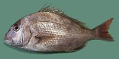

まだい（真鯛）の漁獲量 都道府県ランキング
1位から3位までと、とれた量
まだいが日本でいちばん多くとれるのは兵庫県です。2,050 tで、全国（1万5,454 t）の13%を占めます。

| 順位 | 都道府県 | 漁獲量 | 全国に占める割合 |
|---|---|---|---|
| 1位 | 兵庫県 | 2,050 t | 13% |
| 2位 | 長崎県 | 1,795 t | 12% |
| 3位 | 福岡県 | 1,412 t | 9.1% |
この数字について
- 分類：鯛の仲間
- 全国の漁獲量：1万5,454 t
- この数字が表すもの：漁獲量（海でとった重さ。養殖は含みません）
- 調査：海面漁業生産統計調査（海面漁業） 令和6年
- 36県分を調査（調査していない県は順位に入りません）
まだいの漁獲量について、よくある質問
- まだいの漁獲量が日本一の都道府県はどこですか？
- 兵庫県です。海面漁業生産統計調査（海面漁業）（令和6年）で2,050 tでした。
- まだいの漁獲量ランキング2位・3位はどこですか？
- 2位は長崎県（1,795 t）、3位は福岡県（1,412 t）です。
- まだいの全国の漁獲量はどれくらいですか？
- 1万5,454 t（令和6年）です。